Witch's Hut (Arcane Curiosities Vol.5)
Twelve animated witch's-hut props for top-down games: a jack-o'-lantern, a black cat, a pumpkin patch, a toadstool ring, a broom, a scarecrow, an herb rack, a mortar bench, a spinning wheel, an owl, a bat roost and a hut door. Three of them are free in the Free Witch Starter.
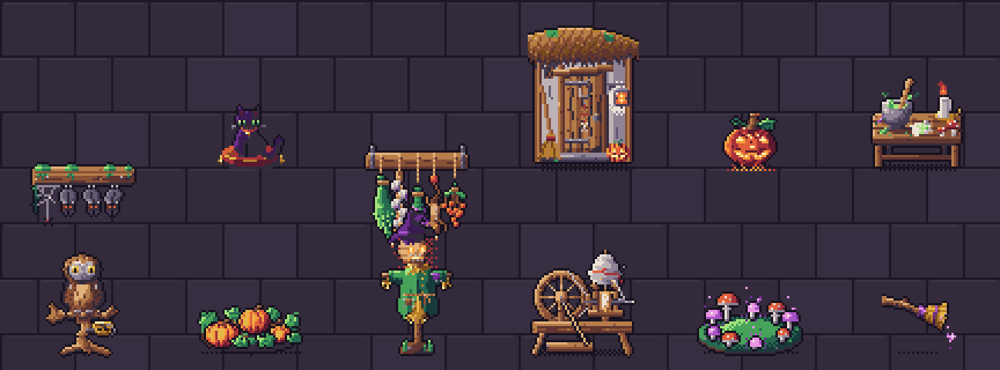
All 12 props · 42 animations
Every prop below is shown at its real frame rate. Sprites are drawn in top-down 3/4 view (key light top-left) at 32–64 px, with one 32-colour palette shared by every Arcane Curiosities volume, so props from different volumes sit together in one scene.
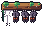
Bat Roost
Mossy beam with three red-eyed bats hanging upside down and a cobweb; 'flutter' sends them flapping off, 'empty' sways the web, 'return' flies them back. Ceilings, belfries, haunted attics, triggers.
48×32 px · 4 animations: empty (16f), flutter (12f, once), idle (16f), return (12f, once)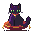
Black Cat
Black witch's cat with a bell collar on a velvet cushion; 'idle' swishes and blinks, 'groom' licks a paw, 'hiss' arches and bristles, 'sleep' curls up. Familiars, pets, shop counters.
32×32 px · 4 animations: groom (12f), hiss (8f, once), idle (16f), sleep (20f)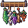
Herb Rack
Wall beam hung with sage, a garlic braid, lavender, rowan berries and a dried-lizard charm; 'breeze' leans them into a gust and drops a leaf, 'dried' is browned and withered. Witch huts, apothecaries, kitchens.
48×48 px · 3 animations: breeze (16f), dried (16f), idle (16f)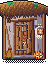
Hut Door
Crooked plank door under a thatch eave with a horseshoe, twig-and-bone charm, lantern and pumpkin; 'open' swings in on a firelit room with a green cauldron glow, 'close' thuds shut. Witch cottages, shops, room transitions.
48×64 px · 4 animations: close (10f, once), closed (12f), open-idle (12f), open (10f, once)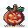
Jack O Lantern
Ribbed carved pumpkin with a jagged grin, lit from inside in warm 'fire', violet 'witch' or blue 'soul' light; 'unlit' smokes, 'ignite' catches and flares. Halloween scenes, paths, light sources.
32×32 px · 5 animations: fire (12f), ignite (8f, once), soul (12f), unlit (12f), witch (12f)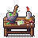
Mortar Table
Rough worktable with a stone mortar of green paste, candle, toadstools and a rune scrap; 'grind' turns the pestle by itself with green dust, 'brewed' bursts a violet cloud. Crafting and brewing stations.
48×48 px · 3 animations: brewed (8f, once), grind (12f), idle (16f)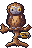
Owl Perch
Tawny owl on a gnarled T-perch with a brass dish; 'look' swivels its head, 'hoot' puffs up with sound arcs, 'night' darkens it with glowing eyes. Familiars, studies, messenger owls, day/night scenes.
32×48 px · 4 animations: hoot (8f, once), idle (16f), look (10f, once), night (16f)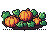
Pumpkin Patch
Tilled bed with three uncarved pumpkins, broad leaves and curling tendrils; 'grow' swells the middle pumpkin to ripe, 'harvested' leaves stumps and one small pumpkin. Witch gardens, farms, harvest quests.
48×32 px · 3 animations: grow (10f, once), harvested (12f), idle (12f)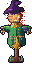
Scarecrow
Straw scarecrow in a floppy witch hat and patched coat; 'idle' sways in the wind, 'haunted' burns orange eyes with embers, 'turn' slowly faces the viewer and ignites. Fields, ambush enemies, Halloween set pieces.
32×64 px · 3 animations: haunted (16f), idle (16f), turn (8f, once)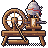
Spinning Wheel
Old eight-spoked spinning wheel with a needle-sharp spindle and a fleece distaff; 'spin' turns the wheel and pumps the treadle, 'cursed' spins by itself with violet yarn and sparks. Cottages, fairy-tale curse scenes, interactables.
48×48 px · 3 animations: cursed (12f), idle (12f), spin (12f)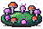
Toadstool Ring
Fairy ring of red spotted and glowing violet toadstools on moss; 'spores' puff glowing spores, 'awaken' runs light round the ring and flares. Fey groves, summoning spots, quest markers.
48×32 px · 3 animations: awaken (10f, once), idle (12f), spores (12f)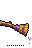
Witch Broom
Witch's besom with a knotted handle and a ragged straw bundle; 'lean' stands with a glint, 'hover' floats and bobs shedding violet sparkles, 'takeoff' lifts it level. Decor, pickups, mounts, cutscenes.
32×48 px · 3 animations: hover (16f), lean (12f), takeoff (10f, once)What's in the ZIP
PNG sprite sheets with frame JSON (anchor at the feet), GIF previews, the palette (.gpl, .hex, .png), a Godot 4 project with a SpriteFrames resource and scene per prop plus a demo scene, catalog.json and SKILL.md for AI coding agents. Commercial use in your games is allowed; reselling or redistributing the art as assets is not.